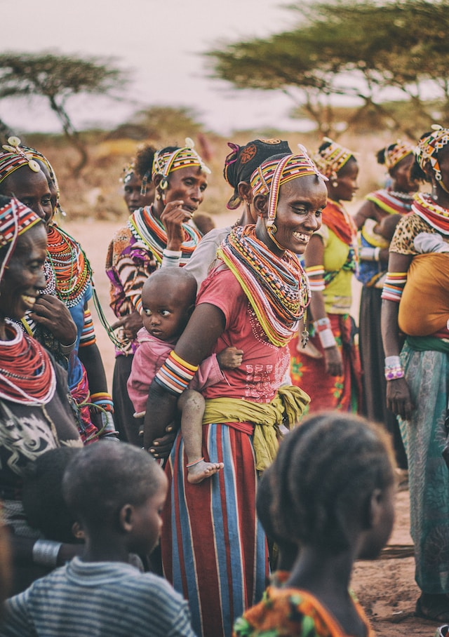

History of Nigerian Currency
The Yorubas originated from Ile-Ife, arose and became quite popular by their trading with the Portuguese, which gave them a large supply of guns.
However, they were unable to push back the Fulani who invaded them and pushed much of the Yoruba to the south.
In the late 1800s, the Yorubas formed a treaty with the Fulani and in 1901 they were colonised by the British. Because of their enmity with the Fulani who are the great Islamic evangelists, most of the Yoruba people do not hold to Islam but instead worship many of the gods and spirits that the Yoruba hold to.
Economically, Yoruba people primarily engage in agriculture, with about 15% of the people employed as merchants or artists and craftsman.
One of the features that make Yoruba people unique is their tendency to form into large city groups instead of small village groups. The Yorubas are today one of the three main ethnic groups that make up Nigeria. They can also be found in neighbouring countries. People & Culture Yoruba People
Yoruba people are a large ethno-linguistic group or ethnic nation in Africa, and the majority of them speak the Yoruba language. The Yoruba constitute approximately 35 percent of Nigeria’s total population, and around 40 million individuals throughout the region of West Africa.
While the majority of the Yoruba live in western Nigeria, there are also substantial indigenous Yoruba communities in Benin, Ghana, Togo and the Caribbean.
A significant percentage of Africans enslaved during the TransAtlantic Slave Trade in the Americas managed to maintain the Yoruba spiritual religion known as Aborisha.
Indeed, the initiation and practice of Aborisha spiritual religion offers a route to all people of African descent, who were victims of slave trade in the Americas or the Caribbean, to make claim to Yoruba heritage.
The Yorubas are the main ethnic group in the states of Ekiti, Lagos, Ogun, Ondo, Osun, and Oyo, which are subdivisions of Nigeria; they also constitute a sizable proportion of Kwara and Kogi States as well as Edo State.